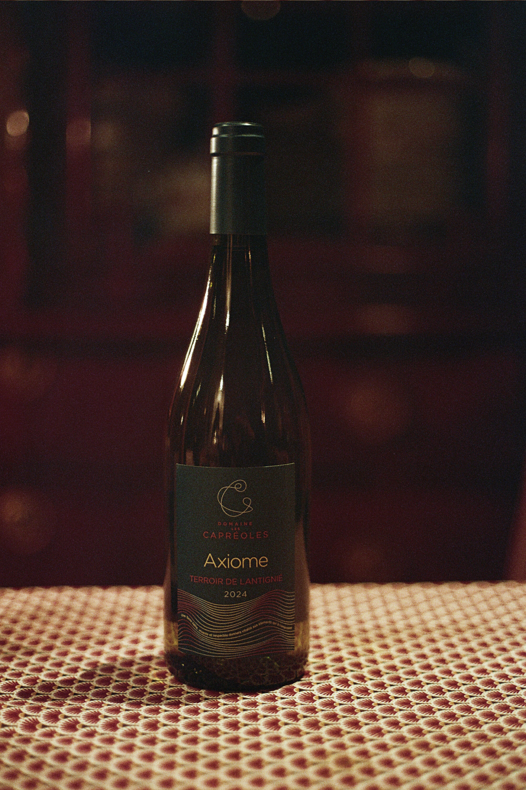

Domaine les Capréoles
Axiome 2024
Beaujolais Lantignié — Wit
| Appellation | Beaujolais Lantignié |
| Vintage | 2024 |
| Stijl | Fijn & Mineraal |
| Bodem | Glacier Moraines |
| Druivenras | Chardonnay |
| Aroma's | Peer, lindebloesems, brioche |
| Opvoeding | 8–10 maand op eik |
| Bewaarpotentieel | 5–8 jaar |
| Serveren | 10–12 °C |
| Alcohol | 13% |
Deze wijn is afkomstig van een uniek terroir, gevormd door afzettingsmateriaal dat door het smeltwater van gletsjers duizenden jaren geleden werd meegevoerd. De bodem bestaat uit glaciaire morenes, wat een ideale ondergrond vormt voor de teelt van Chardonnay.
De wijn rijpte gedurende 8–10 maanden op eikenhouten vaten, waarbij het hout subtiel en harmonieus geïntegreerd is en nooit domineert. In de neus tonen zich aroma's van fris fruit zoals peer, rode appel en citrus, aangevuld met frisse kruidigheid en bloesemtonen met nuances van gerookte accenten, brioche en amandel. In de mond presenteert de wijn zich met een volle, ronde aanzet dankzij de houtopvoeding, mooi ondersteund door strakke, verfrissende zuren.
Afhalen of levering in België. Betaling binnenkort online beschikbaar.